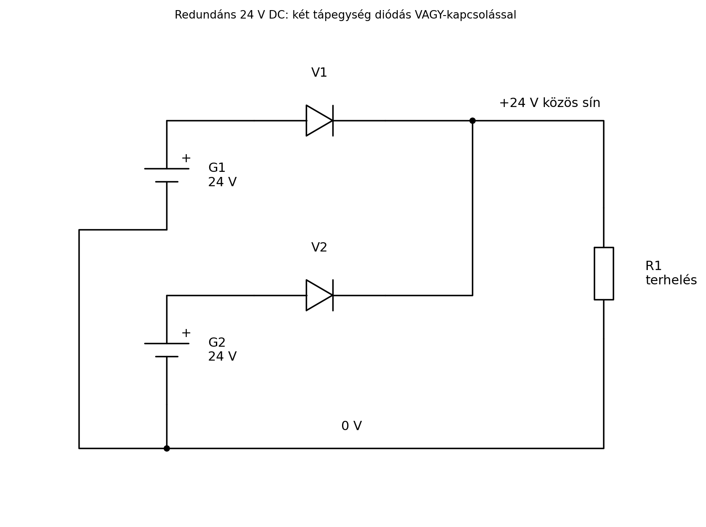

![24 V-os vezérlőtáp egy kapcsolószekrényben: primer védelem, négy szekunder ág, PELV-kötés - Q1 a szekrény főkapcsolója, F10 a tápegység primer kismegszakítója, G1 a 24 V / 5 A-es tápegység. A +24 V sínről négy ágvédő (F11–F14, elektronikus 24 V-os áramköri védő, I> jellel) táplálja az ágakat: A1 PLC és HMI, A2 érzékelők és digitális bemenetek, A3 csatolórelék és jelzőlámpák, A4 mágneskapcsoló-tekercsek és szelepek. A 0 V (M) sín egyetlen ponton, az X0 bontható összekötőn át csatlakozik a PE-hez (PELV). Az ágak áramértékei példaadatok.](assets/ve138-diagram-1.png)
A kapcsolódó elmélet: tankönyv, 38.1 alfejezet.
Példa (A). Egyutas egyenirányító
szűrőkondenzátorral. A transzformátor szekunder feszültségének
csúcsértéke
,
a terhelőáram
,
a szűrőkondenzátor
,
a töltési frekvencia
.
Számítás. A hullámosság csúcs-csúcs értéke:
A kimeneti középfeszültség közelítőleg:
Figyelembe véve a dióda nyitóirányú feszültségesését (kb. 0,7 V), a tényleges kimenet kb. . Ellenőrzés: a hullámosság a kimeneti feszültség kb. 47 %-a (), ami nagyon nagy; ilyenkor a közelítés is csak durva becslés. A hullámosságot a kapacitás növelésével lehet csökkenteni (például -nál ).
Példa (B). Hidas egyenirányító 230 V hálózatról. A
hálózati csúcsfeszültség
.
A szűrőkondenzátor
,
a terhelőáram
,
a töltési frekvencia
.
Számítás. A hullámosság:
A középfeszültség a diódák vesztesége nélkül:
A híd két diódáján eső kb. 1,4 V-ot levonva a kimenet kb. . Ellenőrzés: a hullámosság a kimeneti feszültség kb. 3 %-a, ami már elfogadható sok tápegység bemenetén.
Példa (C). Lineáris stabilizátor hatásfoka. Egy
7805-ös stabilizátor bemenete
,
kimenete
,
terhelőárama
.
Számítás. A veszteségi teljesítmény:
A bemeneti teljesítmény:
A hatásfok:
Ellenőrzés: a veszteség (7 W) jelentős, ezért a stabilizátor hűtőbordát igényel. Ha a bemenet közelítene a kimenethez (pl. 7 V), a hatásfok javulna: .
Példa (D). Kapcsolóüzemű táp hatásfoka. Egy SMPS
kimenete
,
,
hatásfoka
.
Számítás. A kimeneti teljesítmény:
A bemeneti teljesítmény:
A veszteség , ami jóval kisebb, mint egy lineáris stabilizátor ugyanilyen átalakításnál. Ellenőrzés: a hatásfok 85 % azt jelenti, hogy a felvett teljesítmény 15 %-a hővé alakul; ez a gyakorlatban jó érték, de a hűtésről itt is gondoskodni kell.
Gyakorló generátor. A kidolgozott példák számolásait az alábbi generátor tetszőleges számú új adattal gyakoroltatja, négy szinten: (A) hullámosság – a töltési frekvenciát (50/100/300 Hz) neked kell kiválasztani; (B) a szükséges kapacitás adott hullámossághoz, a szabványos érték és a feszültségtűrés kiválasztása; (C) lineáris stabilizátor ellenőrzése a hullámosság völgyében, veszteség és hatásfok; (D) kapcsolóüzemű táp bemeneti árama a teljesítménytényezővel.
A HTML-kiadásban az „Új feladat” gomb új adatot sorsol, az „Ellenőrzés” ±2 %-os tűréssel értékel, és felismeri a tipikus hibákat (rossz töltési frekvencia, µF–F váltás, a diódaesés vagy a stabilizátor feszültségkülönbségének kihagyása, PF helyett η-val osztás). A nyomtatott kiadás rögzített feladatsora és megoldókulcsa:
Rögzített feladatsor. A HTML-kiadás gyakorlója végtelen sok hasonló feladatot ad; az alábbi nyolc feladat rögzített, köztük a fejezet önellenőrző 2. kérdése (20 V), 1., 5. és 6. feladata (21,3 V; 0,684 A; 18,9 µF) ellenőrzésként.
Megoldókulcs.
| Feladat | Szint | Eredmény |
|---|---|---|
| 1. | A | ftöltés = 100 Hz; ΔU = 20 V |
| 2. | A | ftöltés = 50 Hz; ΔU = 21,3 V |
| 3. | B | Cmin = 18,9 µF; választott C = 22 µF; feszültségtűrés = 400 V |
| 4. | B | Cmin = 5,88 mF; választott C = 10 mF; feszültségtűrés = 25 V |
| 5. | C | ΔU = 2,27 V; Ube,min = 17,5 V; megfelel? = igen, megfelel; Pveszt = 3,34 W; η = 0,643 |
| 6. | C | ΔU = 10 V; Ube,min = 5,57 V; megfelel? = nem felel meg |
| 7. | D | Pbe = 102 W; S = 157 VA; Ibe = 684 mA; darabszám = 23 db |
| 8. | D | Pbe = 42,4 W; S = 84,7 VA; Ibe = 368 mA; darabszám = 27 db |
Kidolgozott megoldások.
A feladat egy kis gépvezérlő szekrény 24 V DC hálózatának megtervezése a fogyasztói listától a feszültségesés ellenőrzéséig. Az áramértékek példaadatok, valós tervben a készülékek adatlapjáról kell venni őket (ellenőrizendő: adatlapok).
1. Fogyasztói lista (egyidejűség 1, vagyis minden egyszerre üzemel):
| Fogyasztó | Számítás | (A) | Ág |
|---|---|---|---|
| PLC CPU és bővítők | adatlap | 0,60 | A1 |
| HMI (kezelőpanel) | adatlap | 0,50 | A1 |
| 16 háromvezetékes érzékelő | 16 × 15 mA | 0,24 | A2 |
| 16 digitális bemenet | 16 × 5 mA | 0,08 | A2 |
| 8 csatolórelé (0,5 W) | 8 × 21 mA | 0,17 | A3 |
| 8 LED-es jelzőlámpa | 8 × 20 mA | 0,16 | A3 |
| 4 DC kontaktortekercs (4 W) | 4 × 0,167 A | 0,67 | A4 |
| 2 mágnesszelep (8 W) | 2 × 0,333 A | 0,67 | A4 |
| Összesen | 3,09 |
2. Modulválasztás. 25 % tartalékkal ; a következő szokásos méret a 24 V / 5 A (120 W) modul. A tartalék fedezi a későbbi bővítést; a tekercsek behúzási áramlökését az adatlap alapján külön ellenőrizni kell.
3. Primer oldal. 90 % hatásfokkal , aktív PFC-vel () . Az F10 primer kismegszakítót nem ez az áram, hanem a bekapcsolási áramlökés (tankönyv, 38.1) miatt a gyártó ajánlása szerint választjuk (például C6 vagy B10) (ellenőrizendő: a modul adatlapja).
4. Szekunder ágak. Minden ág saját védőt kap, hogy egy hiba ne állítsa le a többit:
| Védő | Ág | Üzemi áram | Névleges érték |
|---|---|---|---|
| F11 | A1: PLC és HMI | 1,10 A | 2 A |
| F12 | A2: érzékelők, bemenetek | 0,32 A | 1 A |
| F13 | A3: relék, jelzőlámpák | 0,33 A | 1 A |
| F14 | A4: kontaktorok, szelepek | 1,34 A | 3 A |
Szabály. Zárlatkor ellenőrizni kell, hogy a védő valóban kiold-e. A kapcsolóüzemű táp korlátozza az áramát: egy 5 A-es modul tipikusan csak kb. 1,1–1,5 × , azaz 5,5–7,5 A-t ad (egyes típusok rövid ideig többet). Egy B2 jellegű kismegszakító mágneses kioldásához viszont 3–5 × 2 A = 6–10 A kell (egyenáramon a küszöb még magasabb lehet). A zárlat tehát nem biztosan old ki gyorsan, közben a kimeneti feszültség összeesik, és az egész 24 V-os hálózat leáll, a PLC-vel együtt. Megoldás: ágankénti elektronikus (24 V-os) áramköri védő, vagy a táp adatlapján az adott modulhoz igazoltan kioldónak megadott védőkészülék (ellenőrizendő: a táp és a védőkészülék adatlapja).
5. A 0 V földelése (PELV). A 0 V (M) sínt egyetlen ponton, az X0 bontható összekötőn át kötjük a PE-re. Így a +24 V vezeték földzárlata zárlatként jelentkezik, és az ágvédő lekapcsolja; a pozitív kapcsolás előnye is érvényesül, mert a testzárlatos tekercsvezeték nem húz be magától fogyasztót (lásd Tranzisztorok és kapcsoló üzem (tankönyv, 37.2)). A bontható összekötő a földzárlat keresésekor kell. A 0 V-PE kötést a tervben rögzíteni kell (ellenőrizendő: MSZ EN 60204-1, MSZ HD 60364-4-41).
6. Feszültségesés. A legtávolabbi fogyasztó egy 60 m-re lévő, 8 W-os (0,333 A) szelep, 0,75 mm²-es rézvezetéken:
Ez a 24 V kb. 4,0 %-a; a szelep kb. 23,0 V-ot kap, ami megfelel, ha a szelep −10 %-os feszültséget (21,6 V) még tűr (ellenőrizendő: a szelep adatlapja). Hosszabb kábelnél a nagyobb keresztmetszet vagy a táp közelebbi elhelyezése segít.
Ellenőrző lista.
Szivattyútelepen vagy füstelvezetés vezérlésénél egyetlen táp kiesése az egész rendszert leállítja. Redundáns megoldásban két tápegység (G1, G2) kimenete egy-egy diódán vagy MOSFET-es „ideális dióda” redundanciamodulon át közös +24 V sínre dolgozik (a diódás VAGY-kapcsolás elve, lásd Félvezető anyagok, dióda, LED és Zener-dióda (tankönyv, 37.1)). A két tápot külön primer kismegszakítóról, lehetőleg külön betápról kell táplálni, és a modul jelzőkimenete a PLC-nek megadja, melyik táp hibás. Méretezési szabály (N+1): mindkét tápnak egyedül is el kell vinnie a teljes terhelést. A diódaesés (kb. 0,5–0,7 V, MOSFET-es modulnál kisebb) miatt a tápok kimenetét az adatlap szerint kissé feljebb lehet állítani.

Ha a hálózat kimaradását is át kell hidalni, 24 V-os DC-UPS (akkumulátoros puffermodul) kerül a táp és a fogyasztók közé. Elméleti áthidalási ideje az akkukapacitás és a terhelőáram hányadosa, például ; a valós idő a nagyobb kisütőáram, az öregedés és a hőmérséklet miatt kisebb (ellenőrizendő: gyártói kisütési görbe). Az akkumulátorok kiválasztásáról és karbantartásáról lásd Szünetmentes áramforrások, aggregátorok és akkumulátorok (tankönyv, 36.2).
Cél. A hibás elem (bemenet, tápmodul, szekunder ág) behatárolása méréssel.
Eszközök. CAT III-as multiméter, DC-állású lakatfogó (ha van), a szekrény kapcsolási rajza; oszcilloszkóp csak leválasztott vagy differenciálbemenettel, különben a multiméter AC-állása a hullámosság becslésére.
Biztonsági korlát. A modult felnyitni tilos; a primer oldal hálózati potenciálon van, a bemeneti kapcsok mérése hálózati feszültség közelében végzett munka, ezért csak jogosult személy (a tanuló oktató közvetlen felügyeletével, tanműhelyben) végezheti. A 24 V-os oldal törpefeszültség, de a zárlat ott is éget és gépmozgást okozhat.
Modulcsere előtt az öt biztonsági szabály: 1. lekapcsolás (F10 és szükség esetén Q1); 2. visszakapcsolás elleni biztosítás; 3. a feszültségmentesség ellenőrzése a bemeneti és a kimeneti kapcsokon; 4. földelés és rövidre zárás, ahol a rendszer ezt előírja; 5. a szomszédos feszültség alatti részek lefedése. Lekapcsolás után ki kell várni a modul kisütési idejét.
Lépések és ellenőrzési pontok:
| Tünet | Valószínű ok | Mérés, teendő |
|---|---|---|
| DC OK sötét, kimenet 0 V | nincs bemenet, kioldott F10, hibás modul | bemenet mérése; ha megvan, modulcsere |
| Kimenet lüktet, DC OK villog (hiccup) | kimeneti zárlat vagy erős túlterhelés | ágak lekötése, egyenkénti visszakapcsolás |
| Terheletlenül 24 V, terhelve 18 V, búg | öregedett kondenzátor vagy túlterhelés | terhelőáram mérése; névleges alatt modulcsere |
| Egy ág 0 V | kioldott ágvédő, zárlatos érzékelőkábel | feszültségmentesen szigetelés- és zárlatkeresés az ágban |
| A PLC időnként újraindul | feszültségletörés kontaktor behúzásakor | ágáram és feszültség figyelése; PLC külön ágra vagy tápra, puffermodul |
| Nyitott X0 mellett is folytonos a 0 V és a PE | második, nem szándékos földzárlat a 0 V-on | feszültségmentesen X0 bontása, ágankénti leválasztás |
| A modul túlmelegszik | túlterhelés, rossz szellőzés, meleg szekrény | áram, hézagok, leértékelési görbe |
A +24 V-os vezeték földzárlata a PELV-kötés mellett kioldást okoz; a hiba helyét feszültségmentes állapotban, az X0 bontása után szigetelésméréssel vagy folytonossággal lehet megkeresni, az elektronikát előtte le kell kötni (ellenőrizendő: a mérés módja a gyártói és üzemi utasítás szerint). Az X0-t a vizsgálat végén vissza kell zárni.
Dokumentálás. Jegyezd fel a tünetet, a mért értékeket (terheletlenül, terhelve, AC mV, ágáramok), a hiba okát, a cserélt elemet és a javítás utáni ellenőrző mérést.
1. feladat (A). Egy egyutas egyenirányító terhelőárama 0,5 A, a szűrőkondenzátor 470 µF. Mennyi a hullámosság csúcs-csúcs értéke? A töltési frekvencia 50 Hz. Válaszd ki a helyes képletet, és számolj!
2. feladat (A). Rajzold le a híd egyenirányító kapcsolását, és jelöld a kimeneti polaritást!
3. feladat (B). Egy hálózati SMPS bemeneti pufferkondenzátora 330 µF, a terhelőáram 0,8 A, a híd egyenirányító töltési frekvenciája 100 Hz. Számítsd ki a hullámosságot és a kimeneti középfeszültséget a diódák feszültségesése nélkül, ha a hálózati csúcsfeszültség 325 V!
4. feladat (B). Egy 7812-es stabilizátor bemenete 18 V, kimenete 12 V, terhelőárama 0,8 A. Mekkora a disszipált teljesítmény és a hatásfok?
5. feladat (C). Egy kapcsolóüzemű tápegység kimeneti teljesítménye 90 W, hatásfoka 88 %. Mennyi a bemeneti teljesítmény és a veszteség? Ha a bemeneti feszültség 230 V és a teljesítménytényező PF = 0,65, mekkora a látszólagos teljesítmény és az effektív bemeneti áram? Miért fontos a PF javítása?
6. feladat (D). Egy LED-driver tápegység bemeneti fokozata híd egyenirányítóból és pufferkondenzátorból áll. A hálózati feszültség 230 V, 50 Hz. A terhelés 300 mA-t vesz fel 60 V DC mellett. A kapcsolóüzemű fokozat hatásfoka 90 %. Becsüld meg a bemeneti pufferkondenzátor minimális kapacitását, ha a hullámosság a 325 V-os csúcsfeszültség 10 %-ánál nem lehet nagyobb, és a LED áramának folytonosnak kell lennie! (Tételezz fel 100 Hz töltési frekvenciát, és hanyagold el a diódaveszteséget.)
7. feladat (B). Egy hídegyenirányítót közvetlenül a 230 V-os hálózatról táplálunk (325 V csúcs), a kimenetén pufferkondenzátor van. Mekkora a diódák minimálisan szükséges zárófeszültsége? Miért építenek be a gyártók mégis 600–1000 V-os diódát?
8. feladat (C). Egy szekrény 24 V-os fogyasztói (példaadatok): 10 mágneskapcsoló-tekercs egyenként 5 W, 2 PLC egyenként 0,4 A, 24 érzékelő egyenként 20 mA, 6 mágnesszelep egyenként 6 W. Mekkora az összes áram, és 25 % tartalékkal melyik modult választod (2,5 – 5 – 10 – 20 A)?
9. feladat (D). Egy 24 V / 10 A-es tápegységen mért értékek: terheletlenül 24,1 V, terhelve 21,0 V, AC-állásban a kimeneten 1,8 V. Mire következtetsz, és mit mérsz még a döntés előtt?
Önellenőrzés – válaszok
1. feladat megoldása
Adott:
,
,
.
Keresett:
.
Képlet:
.
Behelyettesítés:
.
Ellenőrzés: a hullámosság nagy, mert az egyutas kapcsolás lassan tölti a
kondenzátort.
2. feladat megoldása
A helyes rajz a Kétutas egyenirányítók szakasz „Híd egyenirányító (Graetz-kapcsolás) pufferkondenzátorral” kapcsolási rajza; az alábbi betűjelek (AC1, AC2, D1–D4, +, −) azzal egyeznek, a kimeneti polaritást a rajz + és − kapcsa mutatja.
A híd (Graetz-kapcsolás) négy diódából áll; a két váltakozó áramú pontot AC1-gyel és AC2-vel jelöljük. A két váltakozó áramú pont közül mindkettőhöz egy dióda anódja (a + kimenet felé) és egy dióda katódja (a − kimenet felől) csatlakozik: AC1 → D1 anódja, D1 katódja → + kimenet; AC2 → D3 anódja, D3 katódja → + kimenet; a − kimenet → D2 anódja, D2 katódja → AC1; a − kimenet → D4 anódja, D4 katódja → AC2. A terhelés a + és a − kimenet közé kerül. A + kimeneten tehát két katód, a − kimeneten két anód találkozik. Ha AC1 pozitívabb, mint AC2, D1 és D4 vezet; ha AC2 a pozitív, D3 és D2 vezet. Mindkét félperiódusban a terhelésen az áram iránya ugyanaz, a pozitív pólus a katódok közös pontja.
3. feladat megoldása
Adott:
,
,
,
.
Keresett:
,
.
Képlet:
,
.
Számítás:
Ellenőrzés: a hullámosság a csúcsfeszültség kb. 7 %-a, ami elfogadható, de a gyakorlatban a diódaveszteséget is le kell vonni.
4. feladat megoldása
Adott:
,
,
.
Keresett:
,
.
Számítás:
Ellenőrzés: a hatásfok 66,7 %, a veszteség 4,8 W, ami hűtőbordát igényel.
5. feladat megoldása
Adott:
,
,
,
.
Keresett:
,
,
,
.
Számítás:
A látszólagos teljesítmény:
Az effektív bemeneti áram:
Ellenőrzés: ha a PF 1 lenne, az áram lenne; a rossz PF miatt az áram nagyobb, ami a vezetékeket és a transzformátort jobban terheli. Ezért fontos a PFC.
6. feladat megoldása
Adott:
,
,
a LED oldali teljesítmény
,
a kapcsolóüzemű fokozat hatásfoka
.
Keresett: a bemeneti pufferkondenzátor minimális kapacitása, ha a
hullámosság
.
Számítás: A bemeneti egyenáramú teljesítmény a kapcsolóüzemű fokozat
bemenete:
.
A bemeneti egyenfeszültség közelítőleg
,
tehát a bemeneti áram
.
A hullámosság képlete:
.
Ebből:
A gyakorlatban ennél jóval nagyobb kapacitást (pl. 100–220 µF) választanak, hogy a hullámosság kisebb, a táp stabilabb legyen, és a bekapcsolási áramlökést is kezelni tudja. Ellenőrzés: a számított érték minimális elméleti kapacitás; a valóságban a diódák vesztesége, a hálózati ingadozás és a csúcstényező miatt nagyobb tartalék szükséges.
7. feladat megoldása
Adott:
,
hídkapcsolás.
A táblázat szerint hídnál a lezárt dióda egy csúcsértéket kap (a
pufferkondenzátor ezen nem változtat, mert a vezető diódapár a lezárt
diódát a kondenzátorral párhuzamosan kapcsolja):
.
A hálózati feszültség tűrése (+10 %: kb. 358 V csúcs) és a hálózaton
megjelenő tranziens túlfeszültségek (kapcsolási és légköri eredetű
impulzusok) a csúcsot jóval megemelhetik, ezért 1,5–2-szeres tartalékkal
(≈ 500–650 V) és a szabványos sorba felkerekítve 600–1000 V-os diódát
választanak (pl. az 1000 V-os általános célú egyenirányító dióda).
Ellenőrzés: 1000 V / 325 V ≈ 3-szoros tartalék, ami a
varisztoros túlfeszültség-védelemmel együtt biztonságos
(ellenőrizendő: gyártói ajánlás).
8. feladat megoldása
Kontaktorok: ; PLC-k: ; érzékelők: ; szelepek: . Összesen , tartalékkal → 10 A-es modul (az 5 A-es nem elég). Ellenőrizni kell még az ágak védelmét és a tekercsek behúzási lökését.
9. feladat megoldása
A terhelés alatti nagy feszültségesés és a szokásos néhány tíz mV helyett 1,8 V-os váltakozó összetevő a pufferkondenzátor vagy a kimeneti szűrő hibájára, illetve túlterhelésre utal. Döntés előtt mérd a terhelőáramot (ágáramok, DC lakatfogó): ha a névleges 10 A fölött van, a túlterhelést vagy a zárlatos ágat kell megkeresni; ha a névleges alatt van, a modul hibás, cserélni kell (az öt biztonsági szabály szerint, a modult nem nyitjuk fel).
Számpélda. Egy 2 × 12 V-os középmegcsapolású transzformátor egy féltekercsének csúcsértéke , a lezárt dióda a teljes szekundert kapja: → 50 V-os (tartalékkal inkább 100 V-os) dióda. Ugyanez a transzformátor hídkapcsolásban a teljes 24 V-os szekundert (csúcsértéke ) egyenirányítja, és a hídban is kell: a diódák igénybevétele azonos, de a középmegcsapolásnál két dióda helyett négy dolgozik a hídban, cserébe a transzformátor egyszerűbb.